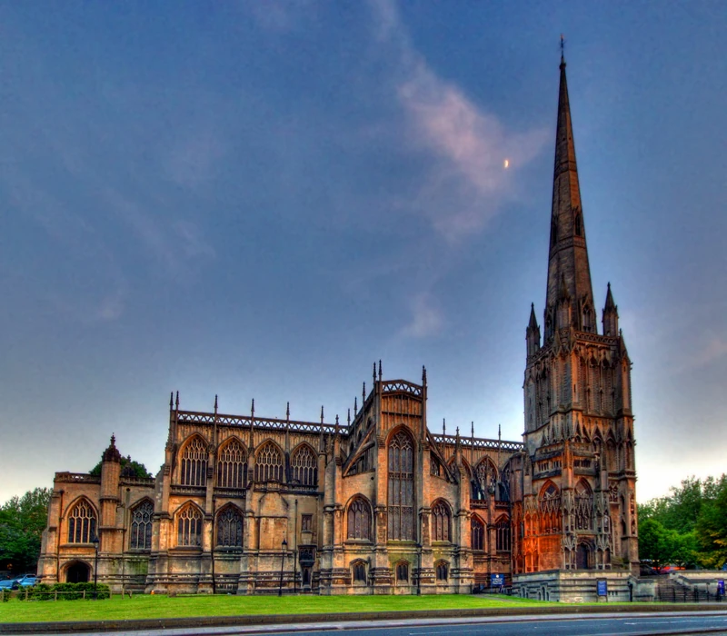
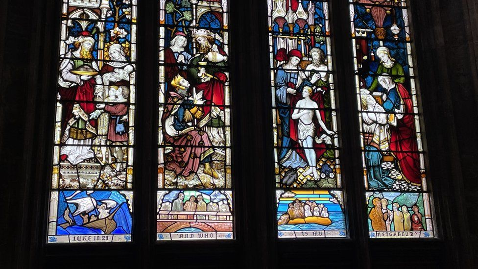
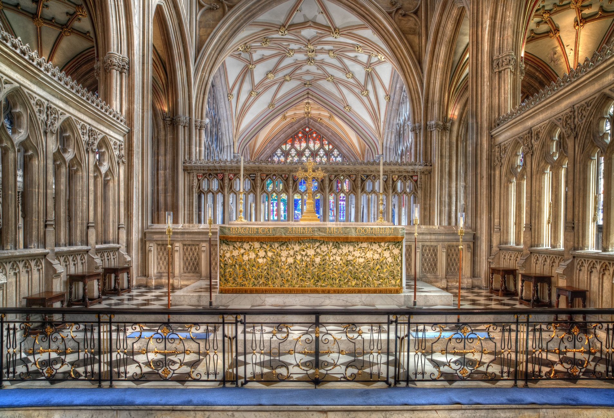

The Church of St Mary the Virgin, widely known as St Mary Redcliffe, is the main Church of England parish church for the Redcliffe district of the city of Bristol, England. The first reference to a church on the site appears in 1158, with the present building dating from 1185 to 1872. The church is considered one of the country's finest and largest parish churches as well as an outstanding example of English Gothic architecture. |
|
Gallery |
|
|  |  |
|  |  |